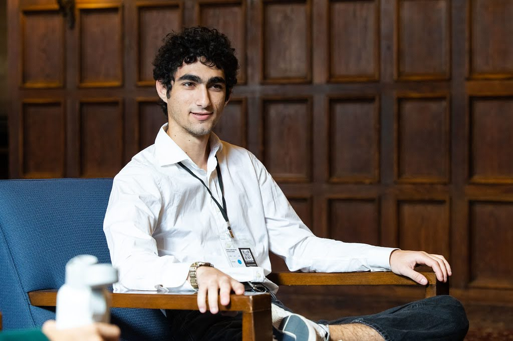

Casey Hartman
M.Sc. Astrophysics · Université de Genève
I am a master's student in astrophysics at the Université de Genève, where I work at the Observatoire de Genève on stellar surface physics, exoplanetary science, and machine learning applications in astronomy. My current research involves updating the ANTARESS spectroscopic workflow to model how stellar oblateness and tidal distortions affect radial velocity measurements and gravity darkening, work with direct implications for the precision of exoplanet characterization. I am also applying a contrastive learning algorithm to JWST NIRSpec/Prism from the FRESCO survey to identify and categorize high-redshift galaxies, as part of the Cosmic Dawn group at UNIGE.
Before moving to Geneva, I completed my B.S. in Astrophysics (Magna Cum Laude) at Tufts University, where I researched circumbinary planet detection with TESS and spent a summer at the Weizmann Institute of Science working on the XENONnT dark matter experiment. During my time at Tufts I was the Treasurer and Chair of the Board for Tufts Students for the Exploration and Development of Space (SEDS). Outside of research I play piano, write my own music, and do astrophotography.

Recent
"BEBOP VII — A TESS Search for Transiting Circumbinary Planets Within the Radial Velocity Catalog" Martin et al. (incl. Hartman), submission to MNRAS 2026.
Presented circumstellar disk truncation research at a departmental seminar, Université de Genève.
SPS Zone Meeting Presentation, Tufts University.